AI审图
两版图纸，改了哪里直接框出来。
从设计、施工到运营，28 个原型。
均为原型，未用于真实业务；示例数据，仅供观看。
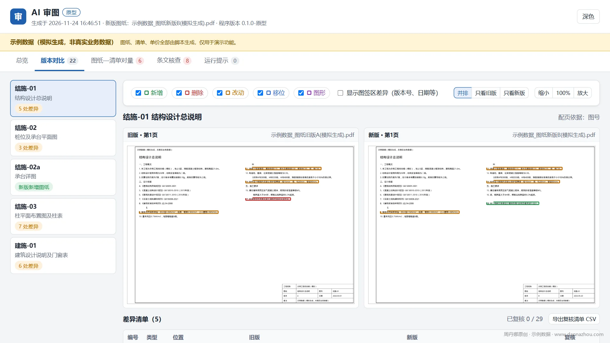
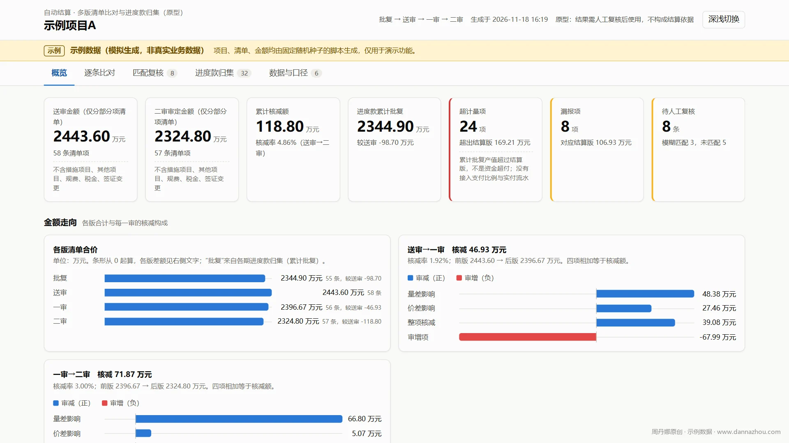


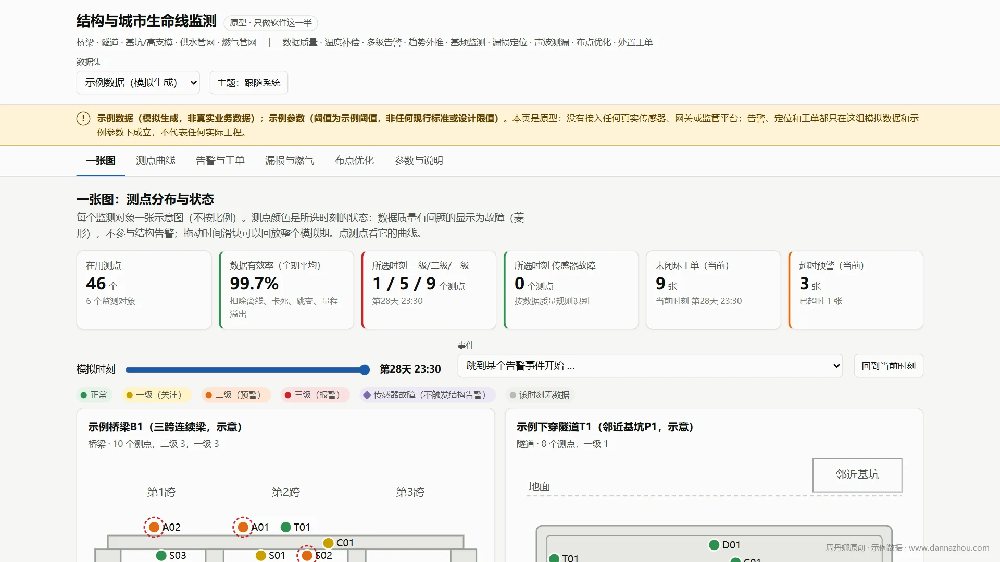

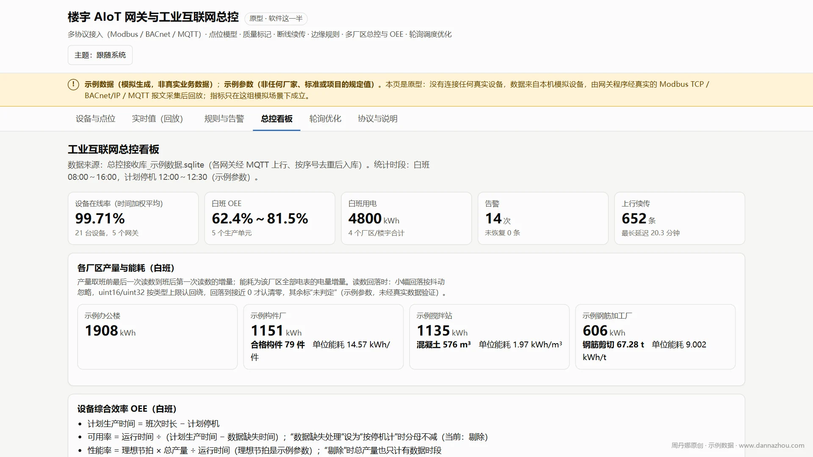

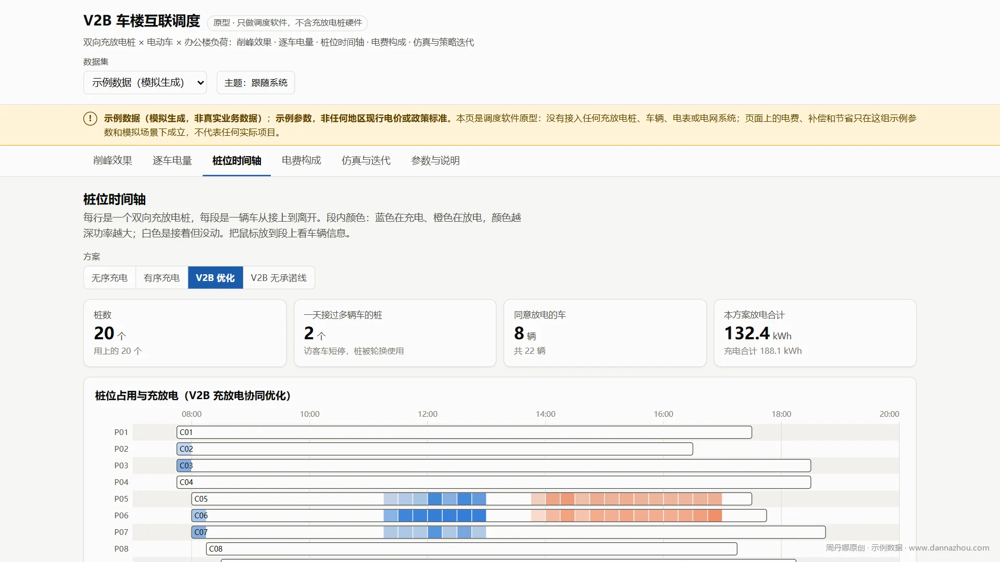
两版图纸，改了哪里直接框出来。
四版结算清单，逐条比对。
一栋楼的电，用在了哪里。
交付包合不合格，自动校验。

从每栋楼出发，步行能到哪些设施。
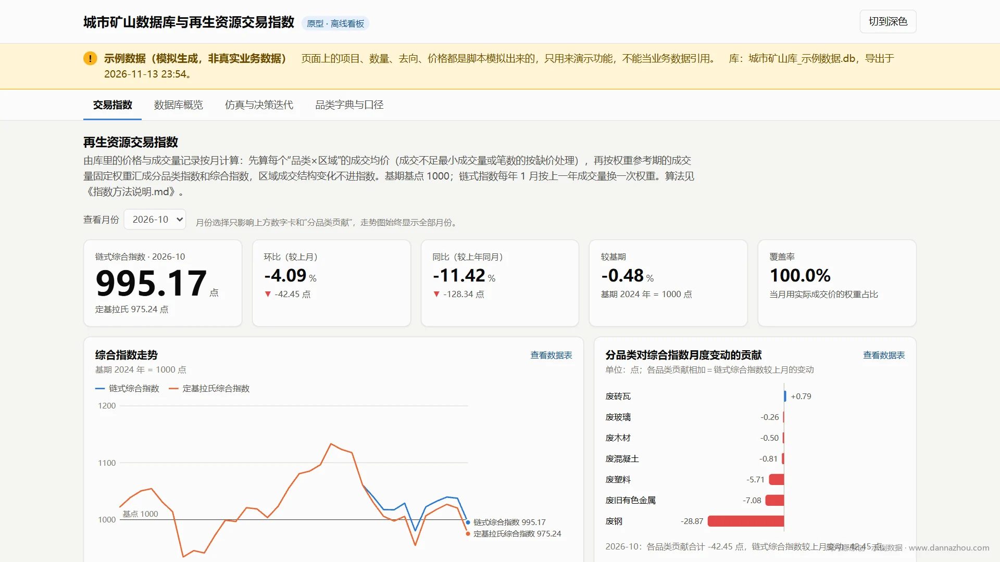
再生资源的成交，算成一条指数。

给每台施工机器人排一天的活。
几栋楼的用电，能调多少。

一批建材的碳，从原料追到工地。

人机协作技能，抽题限时练。
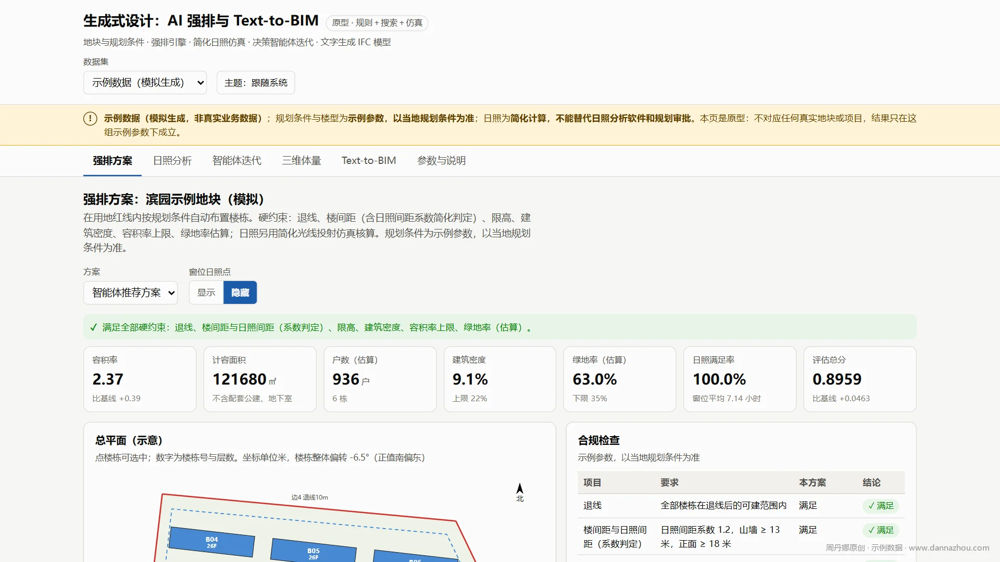
给一块地，自动排出楼栋。
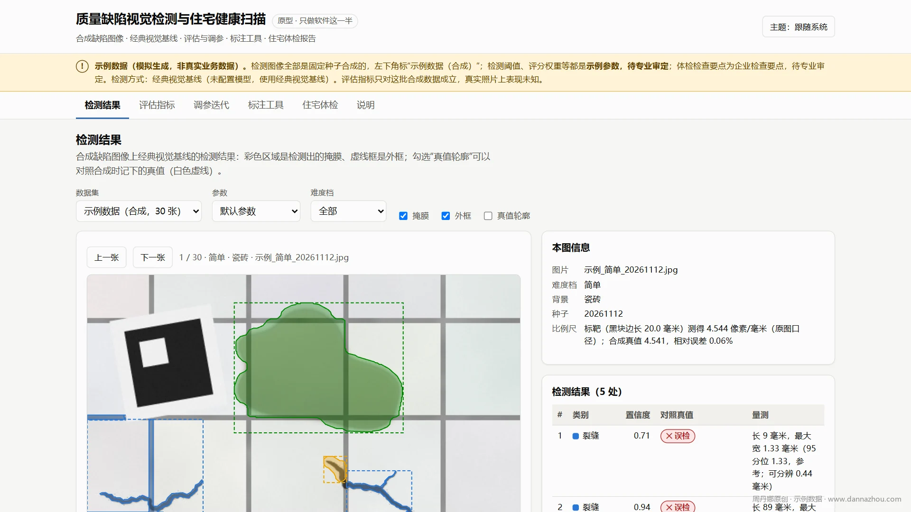
看图找缺陷，并量出大小。
桥梁和隧道的测点，哪里在告警。
二维地图和三维模型，点一处两边都亮。
几个厂区的设备，汇到一处总控。

护理站看每个房间的状态和告警。

拖动时间轴，看工程按计划建起来。
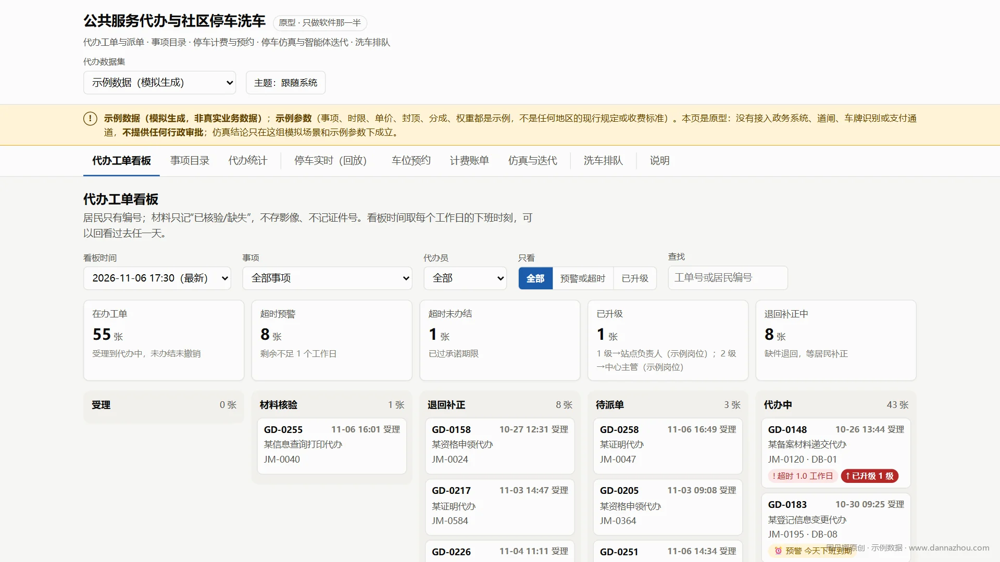
每张代办工单，走到了哪一步。
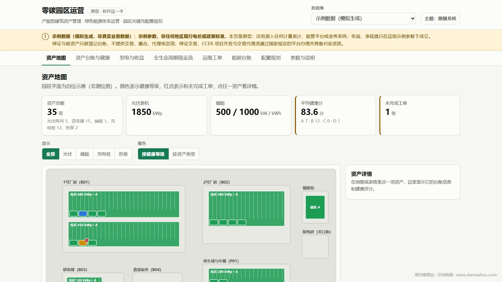
给园区的光伏和储能，做一张资产地图。

构件厂的生产线，换种排法比一比。

无人机航线，自动绕开禁飞区。

一栋住宅改造前后，逐项打分。
从合同到付款，七张台账连成一串。
车何时充电，何时给楼放电。
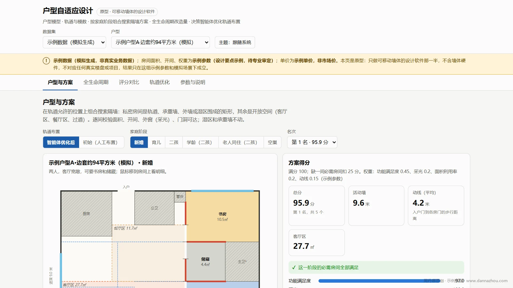
同一套房，随家庭阶段换布局。

回放机器人一天的配送和巡逻。
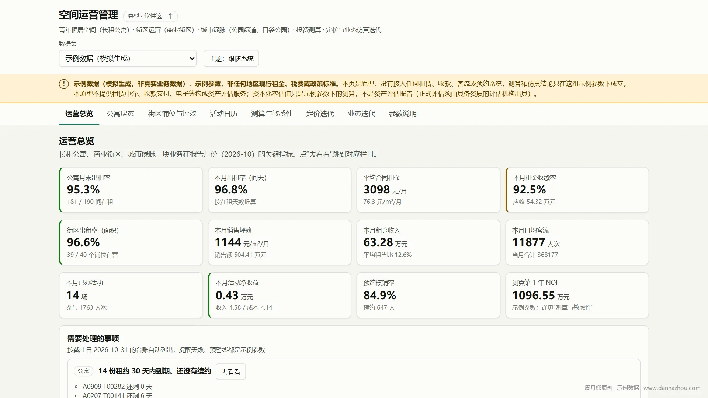
公寓、街区、绿脉的当月运营。
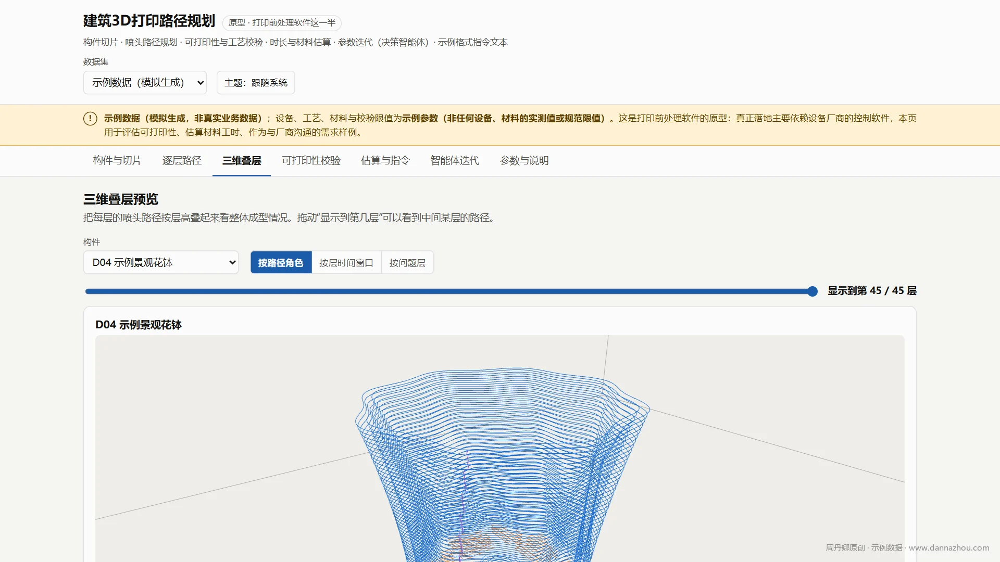
把构件切成层，规划打印路径。
本页只有画面，不含代码和数据。
界面与设计为周丹娜原创，请勿转载或商用。